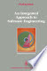
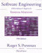
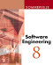

| An Integrated Approach to Software Engineering | ||
|---|---|---|
| Author: | Pankaj Jalote |  |
| Publisher: | Narosa Publishing House | |
| Edition: | 3rd Edition | |
| E-Book: | Download E-Book | |
| Software Engineering, A Practitioner’s Approach | ||
|---|---|---|
| Author: | R.S Pressman |  |
| Publisher: | McGraw Hill Education | |
| Edition: | 7th edition | |
| E-Book: | Download E-Book | |
| Software Engineering | ||
|---|---|---|
| Author: | Ian Sommerville |  |
| Publisher: | Pearson Education | |
| Edition: | 9th edition | |
| E-Book: | Download E-Book | |